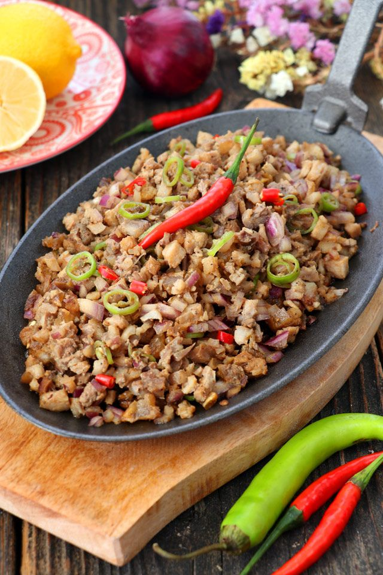

The Phenomenal Sisig!!!

Description:
Pork sisig is a popular Filipino dish. It can be considered as a main dish or an appetizer. The composition of this dish is mainly of pigs parts such as minced pork meat, ears, and face. Chicken liver, onions, and chili peppers are also added.
Ingredients:
- 1 lb. pig ears
- 1 & 1/2 lb pork belly
- 1 piece onion minced
- 3 tablespoons soy sauce
- 1/4 teaspoon ground black pepper
- 1 knob ginger minced (optional)
- 3 tablespoons chili flakes
- 1/2 teaspoon garlic powder
- 1 piece lemon or 3 to 5 pieces calamansi
- 1/2 cup butter or margarine
- 1/2 lb chicken liver
- 1/2 lb chicken liver
- 6 cups water
- 3 tablespoons mayonnaise
- 1/2 teaspoon salt
- 1 piece egg (optional)